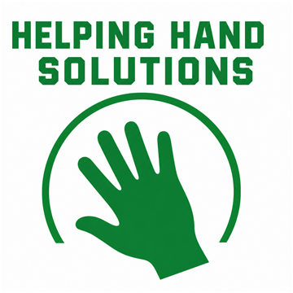

Lawn mowing
One-time cuts, routine mowing, overgrown patches, and basic yard reset work.

Helping Hand Solutions Call 385-338-1322Lawn care, sprinklers, cleanup, hauling, washing, and odd jobs
Helping Hand Solutions takes care of mowing, weeding, sprinkler repair, mulching, pressure washing, gutter cleaning, junk removal, and the random property jobs that keep getting pushed off.
Services
Helping Hand Solutions helps with lawn mowing, weeding, sprinkler repair, mulching, pressure washing, gutter cleaning, junk removal, odd jobs, hauling, yard cleanup, and general property help.
One-time cuts, routine mowing, overgrown patches, and basic yard reset work.
Garden beds, fence lines, curb strips, gravel areas, and weed-heavy spots cleaned up.
Basic sprinkler fixes, broken heads, leaks, coverage issues, and small irrigation repairs.
Fresh mulch, bed refreshes, curb appeal cleanup, and yard areas that need a cleaner finish.
Driveways, walkways, patios, trash areas, and exterior surfaces that need a hard reset.
Roofline cleanouts for leaves, buildup, and overflow problems before small issues get worse.
Garage piles, yard debris, furniture, move-out junk, and items that need loading and hauling.
Heavy lifting, small cleanup tasks, property chores, and practical help that does not fit one box.
Why call one crew
The yard needs a cut. The weeds are taking over. The driveway is stained. The gutters are packed. The sprinkler has a broken head. The garage has a pile you do not want to touch. Helping Hand Solutions is built for those practical jobs around the property.
Clear expectations
Helping Hand Solutions is built for practical property work, but every job still needs a clear scope. Photos, access details, and honest job size help keep quotes fair and prevent surprises.
Price can change based on job size, access, hauling volume, dump fees, surface condition, stairs, and cleanup time.
Work may be declined or adjusted if a job involves unsafe access, unstable surfaces, hazardous materials, or conditions outside the crew's equipment.
Send wide photos, close-ups, access points, and anything that shows size. Good photos help the crew quote faster.
Helping Hand Solutions confirms the work, timing, and estimate before starting. No payment is collected through this website.
Simple process
Call, text, or email the service, location, timing, and photos if you have them.
The crew checks size, access, debris, surfaces, and anything that affects the work.
The job gets done, the area is cleaned up, and future help is easy to request.
Fast quote request
This form prepares an email with the details. For the fastest quote, text photos to 385-338-1322.
Helping Hand Solutions can quote lawn mowing, weeding, sprinkler repair, mulching, pressure washing, gutter cleaning, junk removal, odd jobs, and bundled property cleanup requests.
Common questions
Text Helping Hand Solutions at 385-338-1322 with the service, location, timeline, and photos. Photos make the quote faster and clearer.
No. Helping Hand Solutions focuses on lawn mowing, weeding, sprinkler repair, mulching, pressure washing, gutter cleaning, junk removal, and odd jobs, but general property help can be requested too.
Yes. Bundling mowing, weeding, sprinkler repair, mulching, hauling, gutter cleaning, pressure washing, or odd jobs can make one visit more efficient.
Junk removal pricing can depend on volume, weight, access, dump fees, stairs, loading time, and whether items need special disposal.
Include your city or neighborhood, the service needed, preferred timing, photos, access details, and anything heavy, high up, hazardous, or difficult to reach.
Yes. Helping Hand Solutions may decline or adjust work involving unsafe access, hazardous materials, unstable surfaces, or jobs outside the crew's equipment.